Counterpart Help
Counterpart turns a scan, a description, or a link into the part you need, printed on your 3D printer. Your computer designs it or cleans up your scan and runs your printer; your phone scans, sends and checks. This guide goes in that order: set up the computer, connect a phone, make something.
Nothing in the guide mentions . Try a shorter word, or press Escape to see everything.
Set up
You need three things: Counterpart on a computer, a 3D printer, and a phone if you want to scan. Downloads for every platform are on the home page, with setup steps for each.
1. Your computer
- Mac: an Apple silicon Mac with macOS 27. Move Counterpart to Applications and open it. It lives in the menu bar, with a window for your projects. Allow Local Network access when macOS asks.
- Linux: Ubuntu 26.04 on an x86_64 PC. Install the .deb, or open the AppImage. Counterpart keeps running in the background.
2. Your printer
Open Settings › Printers and add your printer. Counterpart installs the free printer software it needs. Install the slicer that software uses — the app that prepares files for the printer, such as Bambu Studio. Already printing from Claude or Codex? Counterpart finds that setup and uses it as it is.
3. Optional tools
- AI, for design and changes: choose Claude Code, Codex, an API key, or a local model in Settings. Printing a published model doesn't need it.
- Blender, for scan cleanup, design and changes.
- Autodesk Fusion, on the Mac, for parametric designs.
4. Your phone
Install Counterpart on your iPhone, iPad or Android phone, then connect it.

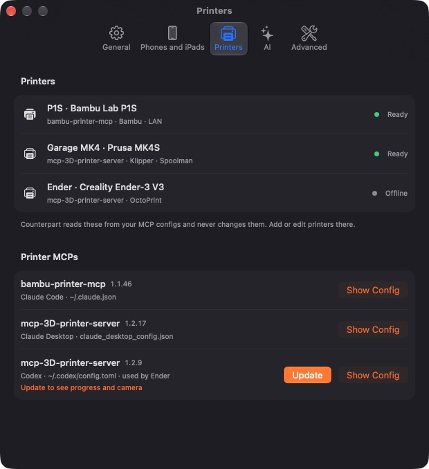
Connect a phone
Your phone connects to your computer so it can send scans and descriptions, and follow the work and the print. You connect once; there's no account.
- Same Apple Account (iPhone or iPad with a Mac): open Counterpart on the phone. It finds your Mac through iCloud and connects by itself.
- QR code: on the Mac, click the Counterpart menu bar icon and choose Add a Phone; on Linux, open Settings. Point the phone's camera at the code.
- Nearby code: on the same Wi-Fi, choose to look on this Wi-Fi. Both screens show the same six-digit code; check it matches, then allow the phone.
Away from home: with a Mac, your iPhone keeps showing projects and updates through iCloud. To reach your computer from anywhere, put the phone and the computer on the same Tailscale network.
Remove a connected phone in Settings on the phone or the computer.

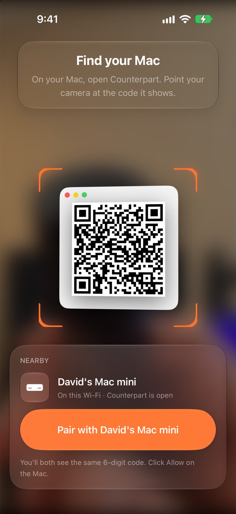

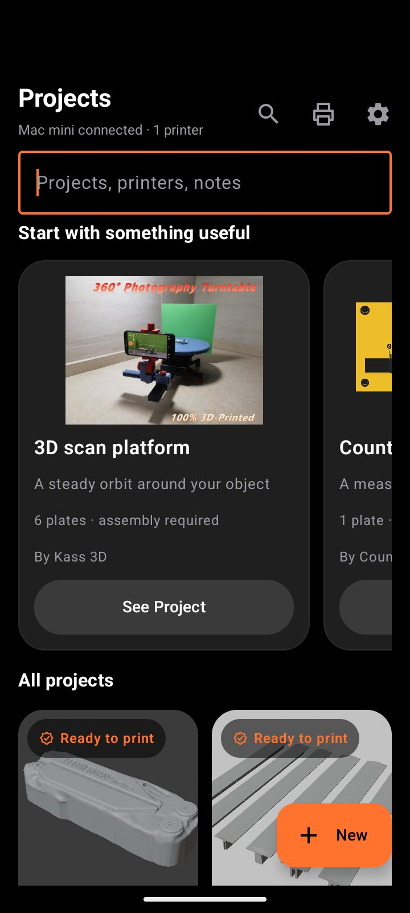
Start a project
The first time you open Counterpart, it offers two starter projects: Kass 3D's 3D scan platform and 3D Print Masters Hub's long vernier caliper.
For your own idea, tap New on your phone, or New Project on the computer. Choose Make something that fits or Copy something, then add as much or as little as you like:
- Describe it. “A hook for a 25 mm tube that holds a mug.” Name a known product and Counterpart looks up its sizes.
- Photograph it. One or two photos and a sentence. A ruler or caliper in the picture helps with sizes.
- Scan it. See Scanning and sizes.
- Paste a link to a model on MakerWorld, Printables or Thingiverse. Counterpart prints the designer's own file, credits them, and changes only what you ask.
On the computer you can also drop photos, STL, 3MF or USDZ files into a new project.

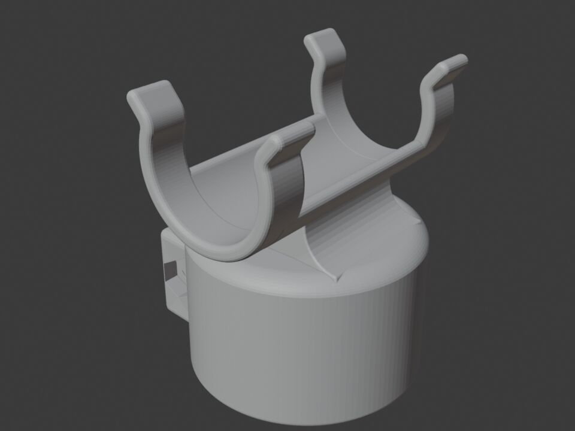
Scanning and sizes
iPhone and iPad
Scanning uses LiDAR on an iPhone Pro or iPad Pro. Put the object on a table with space around it, in good, even light. Walk slowly around it following the guide on screen, then flip it over if you need the bottom. Matte objects scan best; shiny, clear or very dark ones are hard for any scanner.
Android
Walk around the object while Counterpart takes a set of photos. Your computer builds the model from them.
With a scan rig
For small objects, a rig gives steadier scans, and Counterpart guides each ring. Print Kass 3D's scan platform: it's one of the starter projects.
Scan in hand
Holding the object and turning it in front of the camera isn't ready yet. Walk around it, use a rig, or send photos.
Getting the size right
Phone scans are good to a few millimetres. For a part that has to fit exactly, measure the size that matters with a caliper and say it in plain words, or put the caliper in a photo. What changed shows where each size came from.

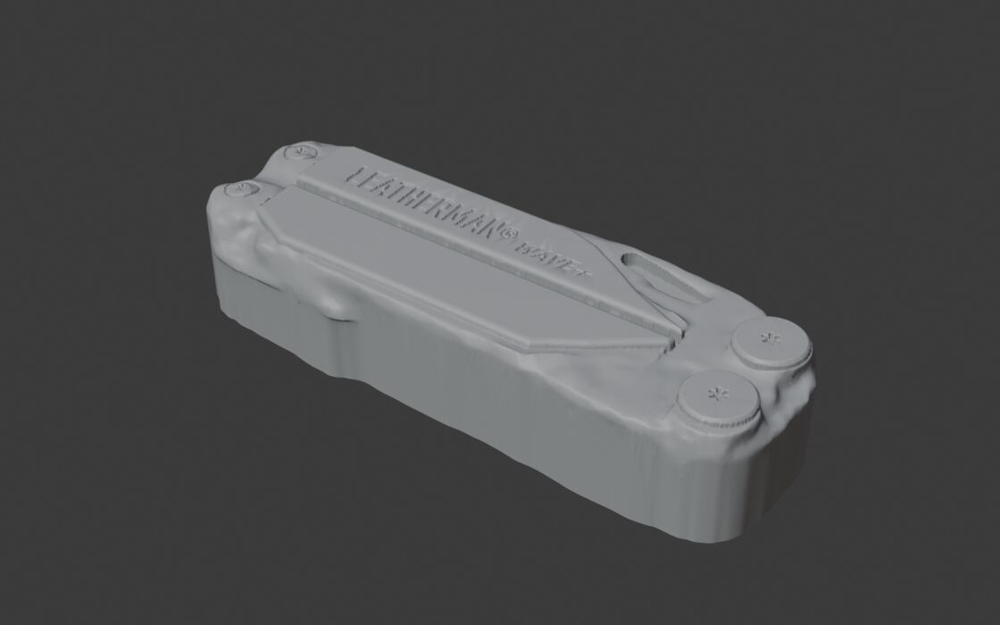
While it works
- Each project shows what it's doing and about how long is left. Put your phone down: it tells you when it's ready.
- If your computer can't see part of the object, it asks: Camera for a close-up, Photos to pick one, or Best guess to carry on.
- When it's ready, turn it in 3D and check the size in millimetres. Ask for changes in plain words, like “make it 2 mm wider”.
- On the computer, Activity lists every step.

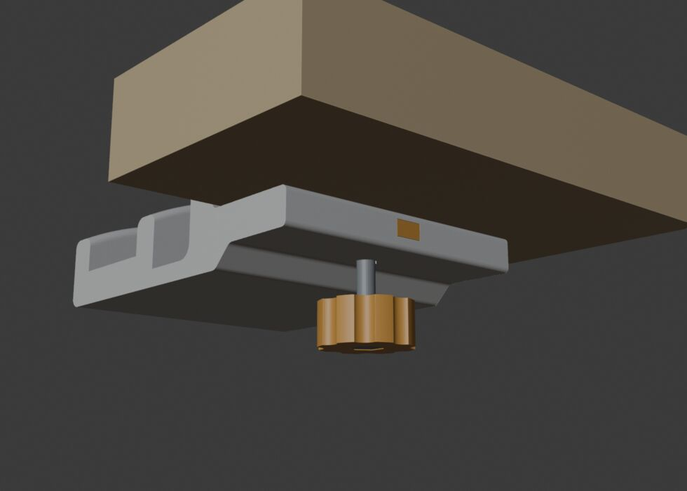
Printing
- Tap Print. Choose the printer, quality, strength and the number of copies.
- Choose filament from what's loaded. For a multi-colour model, each part gets a loaded spool, and it tells you when the match is only close.
- What will print shows the print prepared for your printer (sliced): the top as it sits on the bed, and the bed side turned toward you, with the time and grams. Print sends exactly that.
- To drop in magnets or nuts, add a pause before a layer. Resume when they're in.
- If the printer needs an answer first, Counterpart asks you.
Clear the build plate before you print, as you normally would.
While it prints, the project shows progress, the layer, the time left and the printer's camera, with Pause and Stop.

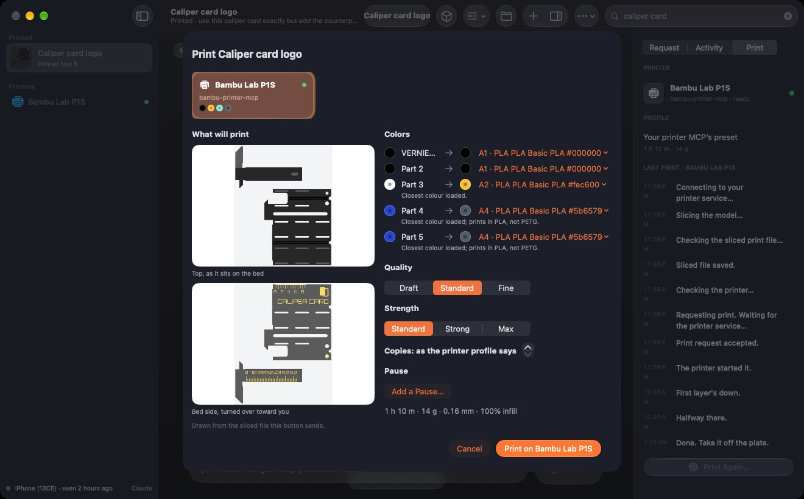

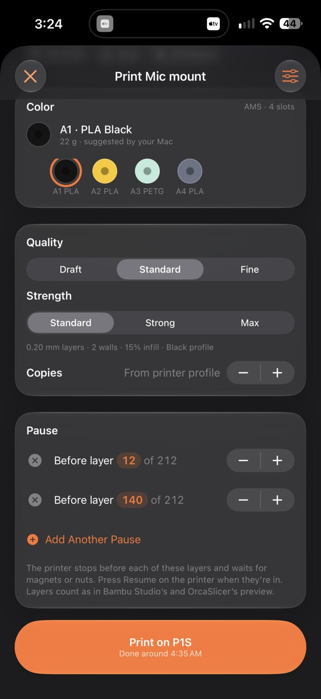

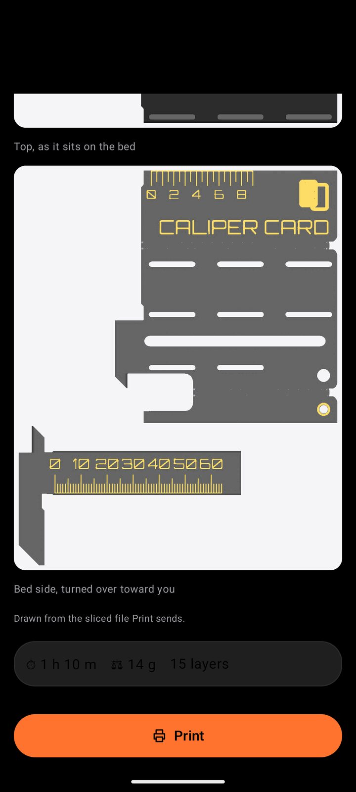
Printers
Counterpart works with Bambu Lab, Prusa, Klipper, OctoPrint, Duet, Repetier and Creality printers, through free printer software it installs from Settings › Printers: bambu-printer-mcp or mcp-3D-printer-server.
- Settings › Printers lists each printer and offers Update when there's a newer version. Updates wait until the printer isn't printing.
- Connection chooses how Counterpart reaches the printer, such as your local network or Bambu Cloud.
- On a phone, Printers shows each printer, what's loaded and its camera.

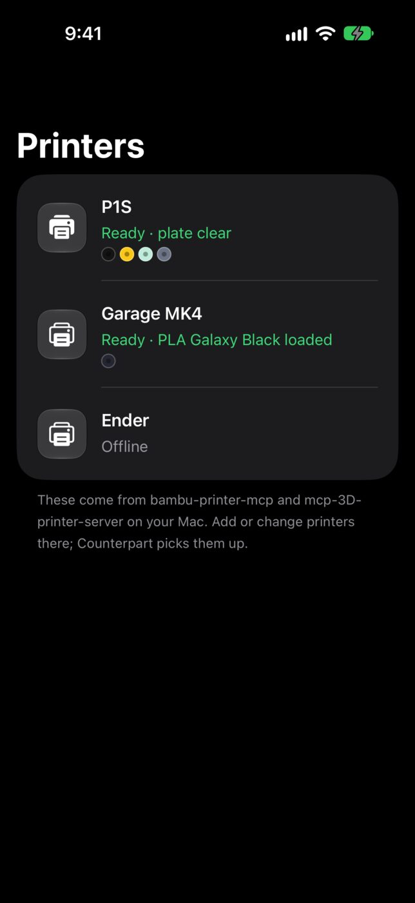

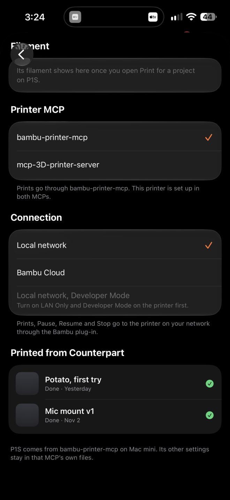
After it prints
- Counterpart asks Did it fit? It works marks the project Done. Needs changes lets you say what's wrong.
- Done projects stay printable: Print another prints it again. A file with several plates remembers which ones have printed.
- Hide from Home tidies a project away without deleting it.
Settings and updates
Notifications, AI, connected devices and general options are on the phone and the computer alike. Printers are set up on the computer.
If a button in this guide is missing on your phone, update Counterpart on your computer. The Mac app updates itself; on Linux, install the newer package.

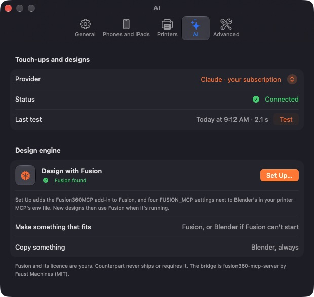
Notifications
Counterpart tells you when a project is ready, when your computer has a question, when a print is halfway, when it finishes, and when something goes wrong. Switch each one off in Settings › Notifications.
- iPhone and iPad: notifications, a Live Activity on the Lock Screen while it prints, and widgets.
- Android: notifications for “Ready to print” and “Did it fit?”.
- Mac and Linux: desktop notifications.

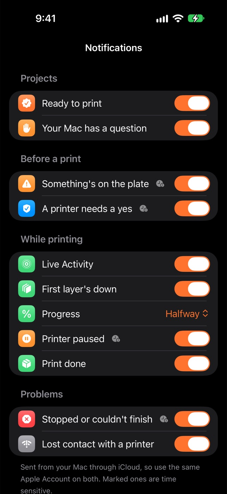
Troubleshooting
My phone can't find my computer
Make sure Counterpart is open on the computer and both are on the same Wi-Fi. On iPhone, check Settings › Counterpart › Local Network is on. Turn off a VPN that might block it. Then connect again with the QR code.
Making it stopped with an error
The project says what went wrong. Check your AI connection in Settings, then open the project and choose Try Again.
The print didn't start
Open the project: it shows what the printer said. If the printer shows an error on its own screen, clear it there, then print again. If Bambu Cloud refused the print, switch the printer's Connection to your local network in Settings › Printers.
I don't see What will print
Update your printer software in Settings › Printers. On the Mac and iPhone, What will print arrives with the next Counterpart update.
The size is a little off
Measure the size that matters with a caliper and say it in Ask for changes, like “the tube is 25.4 mm across”. It redoes that part only.
Android won't install the app
Allow your browser, or the app you opened the file from, to install apps when Android asks.
I don't see a button this page mentions
Update Counterpart on your computer, then reopen the app on your phone.
Privacy
Counterpart has no accounts. Your Mac or Linux computer stores your scans, photos and projects. Your phone reaches it directly, at home or over Tailscale.
- With a Mac, your iPhone or iPad also reads project summaries and updates from your own private iCloud when you're away.
- Lock Screen updates go through Counterpart's relay at counterpart.dtmont.com, which receives the project name, the printer name, the progress and your phone's delivery token so Apple can deliver them. You turn it on in the Mac's Settings.
- AI: design, changes and AI cleanup use the provider you choose in Settings, under your own account. What it needs for the job, including views of the model and your close-ups, goes to that provider. A local model keeps it on your network. Off turns AI off.
- Printing: Counterpart reaches your printer from your computer.
Credits
- 3D scan platform: Kass 3D on MakerWorld. Long vernier caliper: 3D Print Masters Hub on MakerWorld.
- Published models you print are credited to their designers on the project, with a link to the original.
- Printing: bambu-printer-mcp and mcp-3D-printer-server.
- Optional tools: Blender and Autodesk Fusion. Open-source licences are in the app under Settings › About.